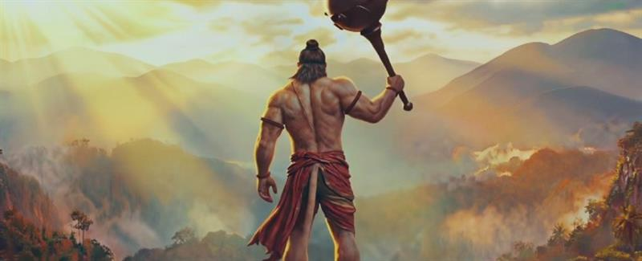
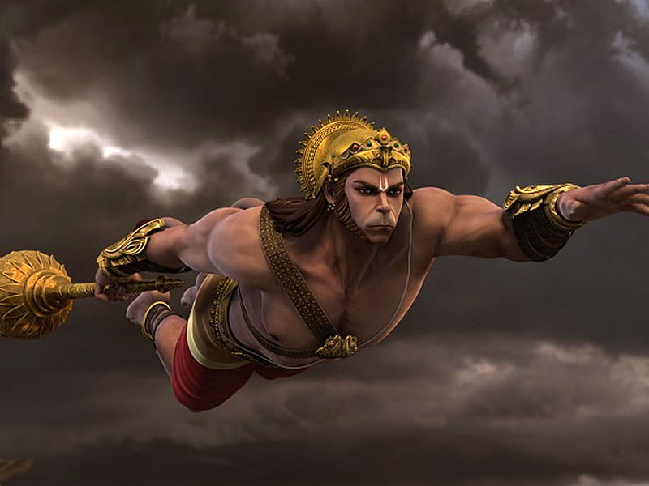
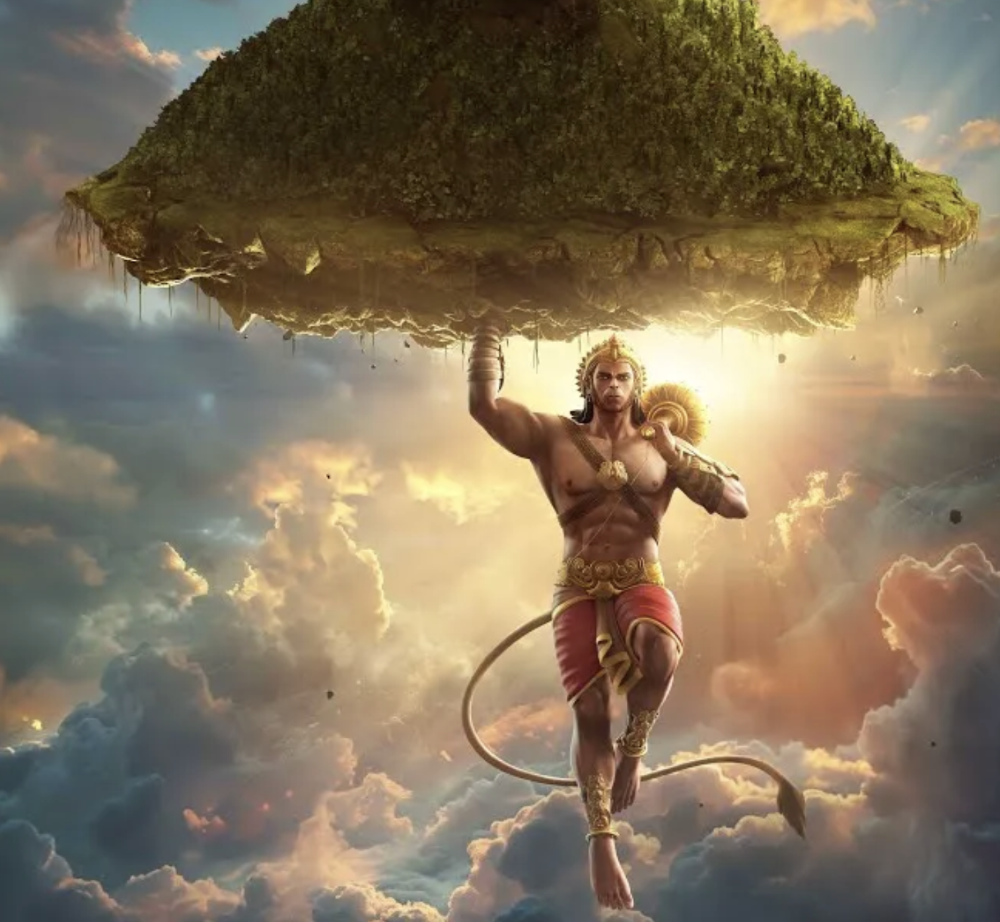

The Story

In the fierce battle in Lanka, a sudden cry rises from the camp. Lakshmana, Rama's brother, has fallen. His breath is faint, and the warriors gather in silence as the healer kneels beside him.
The healer speaks with urgency. Only the Sanjeevani herb can restore Lakshmana, and it grows on the distant Dronagiri mountain in the Himalayas. The herb must be brought before dawn, or the chance will be lost forever.
Rama looks to Hanuman, and Hanuman bows without hesitation. There is no time for delay or doubt. He makes his vow and prepares to fly.
He leaps into the night sky, his mind fixed on the task alone. The earth falls away beneath him. Rivers become silver threads, forests become shadows, and the wind splits around his shoulders.
The journey is long, but his purpose is longer. He remembers Rama's trust and Lakshmana's courage. These memories push him forward.
As he flies, stars blur into streaks of light. The moon watches, and the silence of the night deepens. Hanuman does not slow.
At last the Himalayas rise like a wall in the dark. The peaks are cold and sharp, and the air is thin. Dronagiri stands before him.
The mountain is cloaked in darkness. Herbs glow softly in the moonlight, and the slopes seem to breathe with a thousand lights.
The healer's words return to him: the right herb will save a life, the wrong herb will waste precious time. Hanuman scans the plants.
The clock of dawn is ticking. He cannot risk confusion. He must decide with the clarity of a warrior and the mercy of a servant.

He chooses a solution as bold as it is compassionate. He lifts the entire mountain with both hands. The earth trembles as the peak rises.
The mountain is heavy, but his devotion is heavier. He carries it through the sky, refusing to let uncertainty endanger his mission.
Below, the forests wake to the sound of wind and stone. The night shivers as a mountain moves across the heavens.
Hanuman's heart remains steady. He does not celebrate. He does not boast. He only flies faster, because the dawn draws near.
As he approaches Lanka, the army looks up in astonishment. A shadow covers the camp. The mountain has returned with him.
The healers quickly identify Sanjeevani. They prepare the remedy with practiced hands, and place it upon Lakshmana's lips.
Breath returns. Color warms his face. The camp erupts in relief, and Rama's eyes soften with gratitude.
Hanuman sets the mountain down with care. The stones settle, and the herbs whisper again in the night wind.
He then lifts it once more, returning it to its rightful place. He honors the land he borrowed, knowing that even in urgency, respect must remain.

Dawn breaks. The battle will continue, but a life has been saved. The moment becomes a lesson carried beyond the war itself.
The story is remembered for devotion, courage, and clarity under pressure. It shows that true strength is the strength that serves.
Hanuman's choice is not simply about power. It is about responsibility and about the willingness to carry uncertainty so another may live.
The tale also speaks of time. When time is short, intention must be clean, and action must be decisive.
It speaks of humility. Hanuman does not claim glory; he returns what he borrowed and bows before those he serves.
It speaks of faith. Faith does not replace effort, but guides it and steadies it through the darkest hours.
For generations, the image of the flying mountain has reminded people that compassion can become courage when paired with resolve.
It reminds leaders that their strength is measured by what they lift for others, not what they hold for themselves.
It reminds seekers that clarity often arrives when one stops fearing mistakes and starts choosing the path that serves life.
And it reminds every listener that when a call for help rises into the night, a devoted heart can carry a mountain if it must.